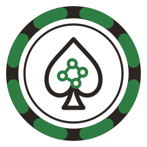

Libre Poker
Poker as a sport, not a casino product
The house always wins — so there is no house.
The argument in one paragraph
Online poker is dying of two diseases, and both are business models: the
rake, which makes even-matched play a slow donation, and the trust
collapse — unauditable shuffles, invisible machines, platforms whose
incentive is your losing slowly enough to stay. Libre Poker's answer to
both is the same answer: remove the house. No rake, because there
is no one to collect it. No trusted dealer — shuffles are committed before
play and every hand replays from its seed. No bot paranoia: machines play
openly under their own flag, and what's at stake is not a balance but a
reputation — signed, replayable, anchored in Bitcoin time,
impossible to backdate and impossible to confiscate. The score is the
measurement: your rating, and your leak in exact big blinds against
equilibrium. Poker where the better player wins, and can prove it.
The invariants
- Rake-free forever. No cut of any pot, under any name. If the
project needs money it asks, as lichess asks.
- Libre. All code open source, all specs public, all formats
documented. Fork the world.
- No server owns the truth. Matches, ratings, and careers live
in signed transcripts anyone can replay. Hosts are conveniences.
- Provable fairness or honest absence. Where a guarantee can't
yet be delivered, the gap is stated — never staged.
- Machines are citizens. Declared agents play openly, rated in
the same pool, flagged everywhere they appear.
- Identity is a keypair. Pseudonymous by default, portable
across rooms, owned by no platform.
- The measurement is sacred. No number appears on a board that
a reader cannot recompute from public data.
Live today
LIVEThe Wardroom: real engine, committed shuffles, solved-game
trainer verified ≈ unexploitable by Local Best Response
LIVEThe leak meter: exact river EV grading, scorecards,
steppable on-table replays, hands that travel as text
LIVEThe library: three books, Deckhand to Primer
NEXTThe Ledger: per-identity match chains, signed transcripts,
a static board that recomputes every rating in your browser